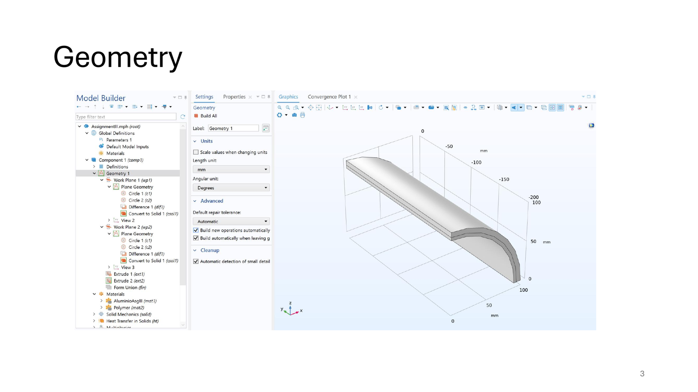
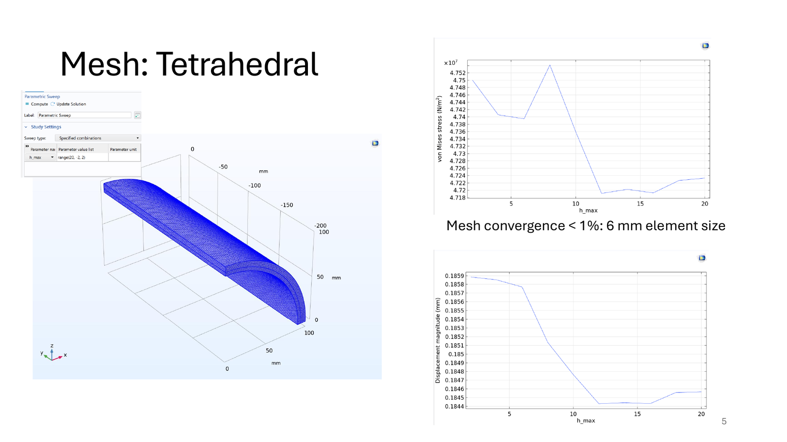
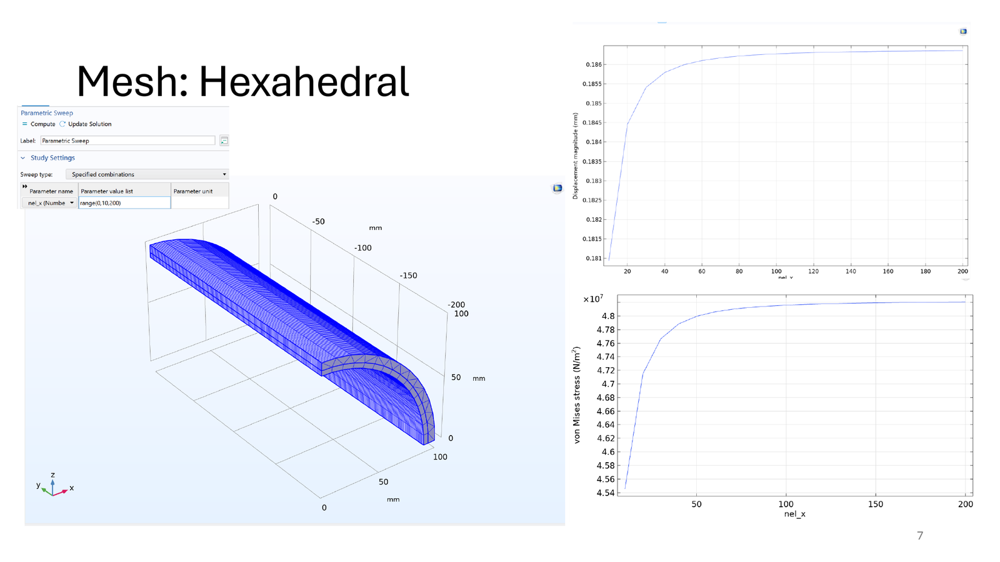
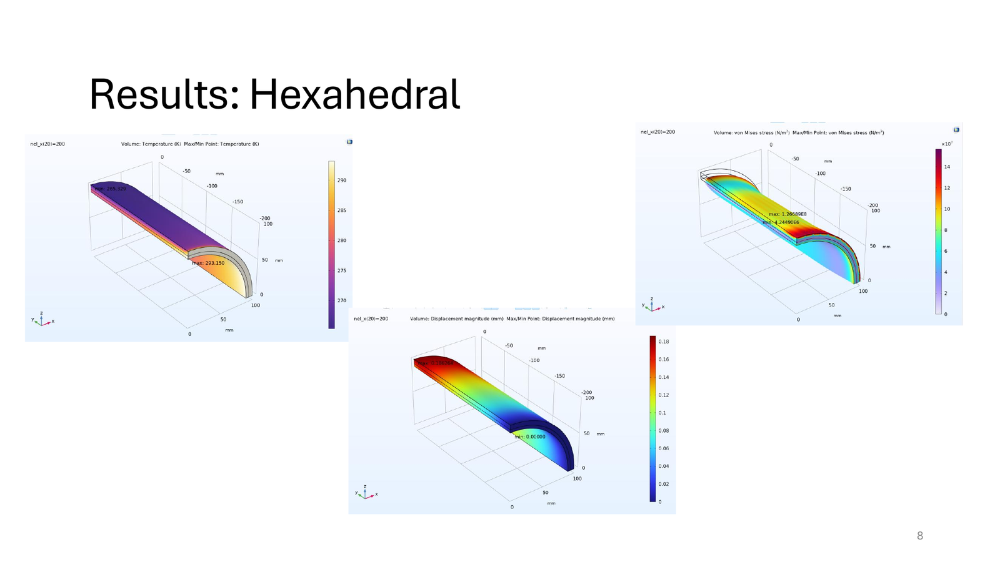
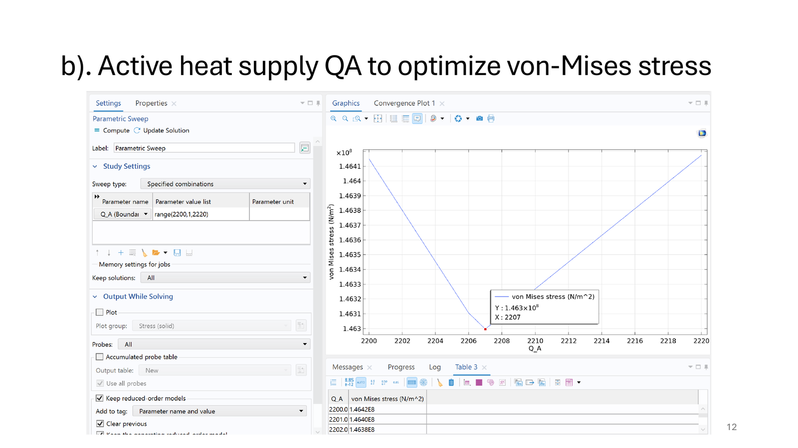
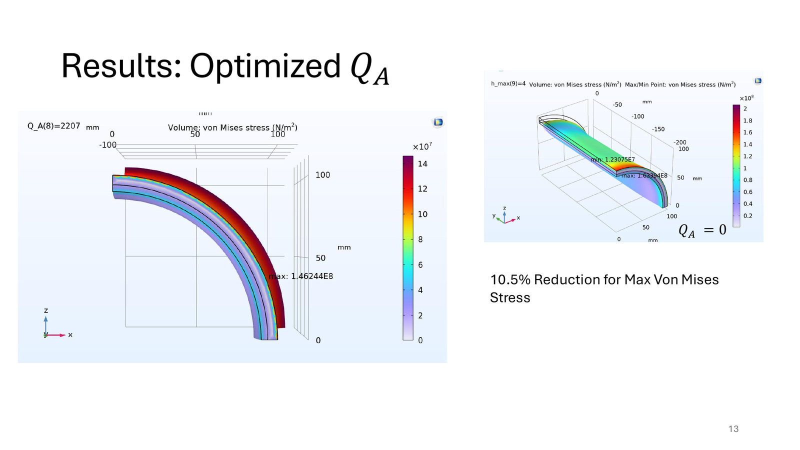
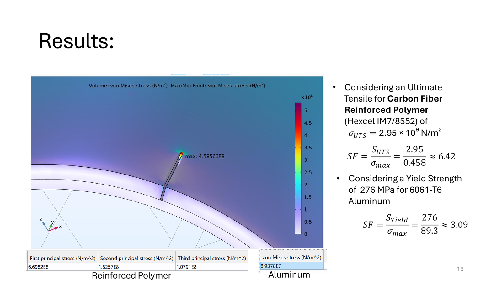

The engineering problem
Layered structures made from materials with different thermal expansion coefficients can develop significant internal stresses when exposed to temperature changes.
These stresses can contribute to deformation, interface damage, crack propagation, or delamination in applications such as aircraft, satellites, and vehicle structures.
The objective of this project was to model the coupled thermal and structural behavior of a curved layered shell and investigate whether active heating could reduce the resulting stress.
Geometry and materials
The model represented a quarter-cylindrical layered shell with a total length of 200 mm.
- Inner radius: 90 mm
- Outer radius: 100 mm
- Aluminum layer thickness: 4 mm
- Polymer-composite layer thickness: 6 mm
- Aluminum thermal expansion coefficient: 23.4 × 10−6 /°C
- Composite thermal expansion coefficient: 56 × 10−6 /°C

Boundary conditions
The model included thermal and mechanical boundary conditions representing an externally cooled layered structure with heat entering through one surface.
- Convection on the outer surface
- Ambient temperature of −20 °C
- Heat inflow through the lower surface
- Constant temperature of 20 °C on the fixed front surface
- Thermal insulation on the symmetry and back surfaces
- Optional active heat supply applied to the inner surface
Simulation workflow
Mesh sensitivity
Two three-dimensional finite-element mesh strategies were developed and compared:
- Free tetrahedral elements
- Swept hexahedral elements
Tetrahedral mesh
The tetrahedral mesh was easy to generate and could adapt to irregular geometry. A mesh-sensitivity study was performed by changing the maximum element size and observing the resulting stress and displacement.
A maximum element size of approximately 6 mm was required to obtain a change below 1% in the evaluated results.

Hexahedral mesh
A swept hexahedral mesh was also created for the regular layered geometry.
The hexahedral model showed smooth convergence with fewer elements and lower computational cost. Both element types produced consistent results, supporting the validity of the finite-element implementation.

Baseline thermo-mechanical results
The coupled simulation calculated the temperature distribution, structural displacement, and Von Mises stress throughout the layered shell.
The difference in thermal expansion between the aluminum and composite layers generated stress across the interface and near the constrained regions of the structure.

Active heat-input optimization
A parametric sweep was performed to investigate how the active heat supply applied to the inner surface affected the maximum Von Mises stress.
The heat input was first evaluated over a broad range and then refined around the lowest-stress region.
The minimum evaluated maximum stress occurred at approximately:
QA = 2207 W/m²

Optimized result
Applying the selected heat input reduced the maximum Von Mises stress by approximately 10.5% compared with the case without active heating.
The result demonstrates how controlled thermal loading can be used to reduce thermally induced stress in a layered structure.

Crack assessment
A 20 mm long and 1 mm wide crack was introduced in the composite layer to study its effect on structural safety.
Local mesh refinement was applied around the crack to better capture the stress concentration.
Under the material-strength assumptions used in the study, the calculated safety factors were:
- Reinforced polymer safety factor: approximately 6.42
- Aluminum safety factor: approximately 3.09
The crack produced a clear local stress concentration, but the calculated maximum stresses remained below the selected material strength limits.

Key findings
- Tetrahedral and hexahedral meshes produced consistent results
- The swept hexahedral mesh converged with fewer elements
- Hexahedral elements were the more efficient choice for the regular shell geometry
- Active heat input reduced the maximum thermally induced stress
- The optimized uniform heat input reduced maximum Von Mises stress by approximately 10.5%
- The modeled crack created a strong local stress concentration
- The calculated stresses remained within the selected material limits for the studied conditions
Limitations
The polymer composite was represented as an isotropic material, which simplifies the direction-dependent behavior of a real fiber-reinforced composite.
The crack was represented using an idealized geometry, and the analysis did not model progressive crack growth, interface delamination, fatigue, manufacturing defects, or nonlinear material failure.
The results should therefore be interpreted as a comparative finite-element study rather than a complete structural certification.
What this project demonstrates
Three-dimensional finite-element modeling, coupled heat-transfer and structural analysis, mesh-sensitivity studies, parameter optimization, thermal-stress evaluation, crack modeling, safety factor assessment, and technical interpretation of simulation results.